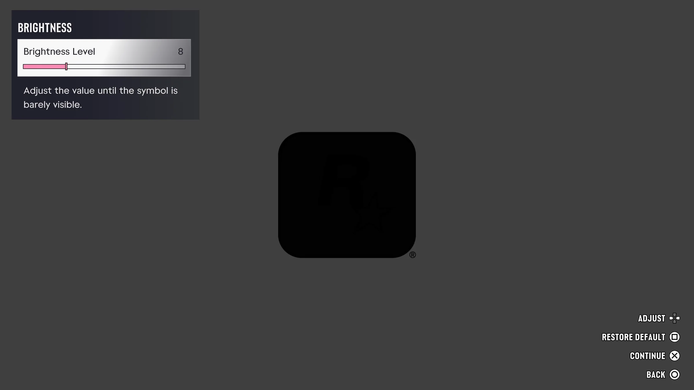

Dark scenes or blurry movement
- Open Pause → Settings → Display and use the in-game brightness calibration. Follow the visible-symbol instruction while your display is in its normal gaming mode.
- If your complaint is smearing when turning, adjust Motion Blur Strength and repeat the same camera movement. A change to motion blur changes the effect, while sustained frame-rate drops require their own diagnosis.
- If contrast makes enemies, prompts, or navigation hard to see, check Display for high-contrast options and UI for readability and navigation. Keep a note of the starting values so you can revert.


Frame drops or graphics modes
The PS5 launch capture shows display and visual-effects controls. A 60 FPS toggle is absent from that capture. Check the current menus for your console rather than assuming a television’s 120 Hz input creates a higher game frame rate. Note whether the slowdown happens while driving fast, in crowds, or while moving the camera in one place.
Headset cutouts or audio out of sync
In Settings → Audio, check the game’s output and volume setup. Compare the same scene through the TV and headset. If one path is affected, report the affected connection, such as a headset plugged into a controller. If both show the same delay or dropouts, record whether it affects the radio, dialogue, or all sound and whether another game behaves the same way.
These comparisons help narrow down the symptom. No one setting is established as a universal fix for the launch reports.